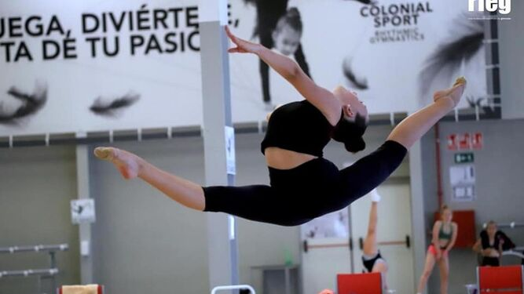
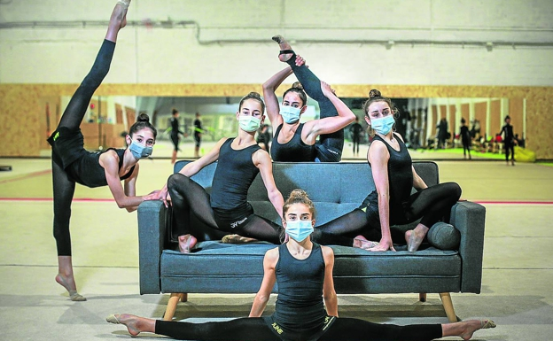
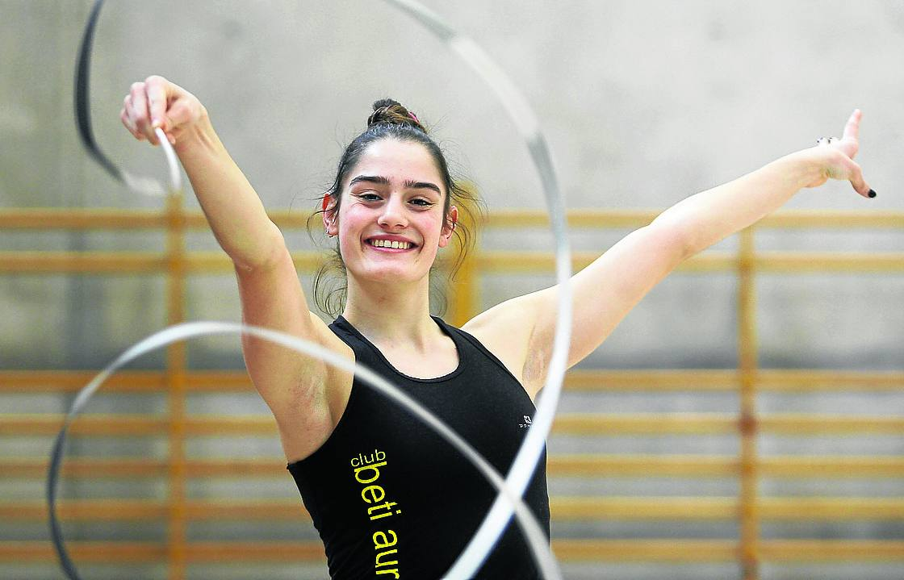

La joven del Club GR Huelva entrenará esta temporada en el Centro de Alto Rendimiento de León
La gimnasta onubense Marta Fernández (Club GR Huelva) formará parte del equipo nacional júnior de conjunto de rítmica que entrenará esta temporada en el Centro de Alto Rendimiento de León; junto a ella forman la selección Andrea Fernández (Club Ritmo, Castilla y León), Yulia Vysotska (Club Miralmar, de Andalucía), Irene Martínez (CG Almendralejo, Extremadura), Alba Justicia (CGR Almara de Burjassot, Valencia) y Victoria Correia (Club Odisea Tenerife, Canarias). Ellas han sido las elegidas tras la puesta en marcha del nuevo proyecto de gimnasia rítmica liderado por la seleccionadora nacional Alejandra Quereda y la directora técnica Isabel Pagán. El Club GR Huelva asegura que “Marta ya sabe lo que es estar fuera de casa; su primer destino fue el Colonial Sport en Valencia, donde ingresó como miembro del equipo nacional júnior individual y tuvo como técnico a Blanca López; posteriormente se trasladó al CAR de Madrid para pasar a entrenar en el conjunto júnior nacional”. “Ahora el destino te lleva hasta León, donde pasas a formar parte de la selección española en categoría júnior. Te toca demostrar una vez más que mereces ese sitio tal y como lo has hecho siempre, trabajando duro sin olvidar de dónde vienes y teniendo claro dónde estas. EL GR Huelva siente una vez más una enorme satisfacción”, añade el club onubense.
Cinco gimnastas del Rítmica Vitoria abren este miércoles el campeonato de España en Valencia tras meses de dura preparación marcada por la pandemia
«¡Vamos June! Más, bonita…Sigue concentrada. Eso eso…!», alienta Paula Orive a su pupila. Desde un sofá y con frío, la exgimnasta campeona del mundo, ahora entrenadora del Oskitxo, ultima los ejercicios que ejecutarán sus cinco niñas en el campeonato de España de Valencia que arranca este miércoles. Junto con María Ereñaga, son las creadoras de un 'club de autor' denominado Gimnasia Vitoria que es la suma del trabajo en equipo de tres entidades alavesas: Oskitxo, CETED Rítmica Vitoria y SUPRA Vitoria. Innovadoras y valientes, decidieron cumplir el sueño de tener una instalación propia. Desde el 1 de marzo, en una nave del polígono de Ali-Gobeo, además de camiones e industria, suenan los compases y acordes de los innumerables entrenamientos de las 630 niñas que formaron parte la temporada pasada de esta gran familia y que, debido a la pandemia, ha recortado a la mitad en septiembre. «Hemos tenido que dejar 11 colegios que no han empezado actividad. Entre reducciones de aforo y que no pudimos contar con el IVEF, nos hemos quedado con 280 y están todas en casa salvo las que van a competir», apunta Paula Orive que saca como positivo de esta situación tan complicada que «somos camaleónicas y mas fuertes de lo que pensábamos». Sonríen las infantiles Aiala Unzalu y June Barrenetxea, la senior Saioa Lamas, las tres preparadas para el estatal individual. Para el torneo de equipos, Osane Quirce y Uxue González también han trabajado duro. Son niñas grandes, con una madurez impropia de su edad. «Estamos preparadas. Después de casi 10 meses sin competir y lo difícil que ha sido, vamos con toda la ilusión a Valencia», repiten como discurso único. Poco acostumbradas a entrevistas, se relajan cuando se habla de gimnasia y sus gimnastas favoritas. Las rusas se siguen llevando la palma entre las preferencias, con Aleksandra Soldatova a la cabeza, Ekaterina Selezneva o Daria Trubnikova. Solo la más veterana, Saioa Llamas, se decanta por la ucraniana ya retirada Hanna Rizatdinova. «Era una gimnasta muy limpia y con mucho carácter», argumenta. Lamas fue campeona de España junior en 2018 y logró subir a primera categoría. Una lesión de rodilla le apartó del estatal en 2019. Este año es el de su reencuentro y va a por todas en la categoría senior donde con el aro, pelota y mazas. Aiala y June en infantil lo harán con cuerda, aro y cinta. Por equipos, Osane llevará ejercicios de aro y pelota y Uxue, de cuerda. Códigos y ejecución El cambio de código en cada cita olímpica obliga a reajustes en los ejercicios. En este ciclo, se valoran más las maestrías que la propia limpieza y ejecución del ejercicio, lo que ellas llaman corporal. Las vitorianas han tenido que preparar en tiempo récord sus ejercicios con cada uno de los aparatos que llevarán al tapiz del Colonial Sport en la localidad valenciana de Alfafar. La instalación pertenece a la Federación Española, aspecto clave para que se desarrolle una competición que ha cambiado varias veces de fecha. Eso, que en otros deportes puede no influir tanto, en la gimnasia rítmica puede ser decisivo. «Para las entrenadoras tampoco ha sido fácil puesto que los ejercicios están adaptados a las dificultades que se marcaban en enero. Entre Iberdrola y Campeonato de España hemos ido preparando los ejercicios para no fallar», explica Paula Orive que reconoce que el trabajo telemático a través de la plataforma zoom, con tres horas de entrenamiento diarios durante el confinamiento, fue de vital importancia para no perder la forma. Las cinco gimnastas alavesas llegan sin complejos, con los protocolos Covid más que aprendidos y seguras de poder alcanzar la gloria y pisar podio. Todo el trabajo de tantos meses, se reduce a un minuto y medio sobre el tapiz. Afortunadamente sin mascarilla. Algo es algo. Tan cerca y tan lejos. Así es la gimnasia rítmica.
La gimnasta de 18 años recibe el premio 'Alavesa del mes' tras proclamarse campeona de España el pasado fin de semana
«No era muy buena de pequeña», confiesa Maider Orbe (Vitoria, 2002). El éxito le ha pillado desprevenida a esta joven alavesa, que a sus 18 años se proclamó campeona de España de gimnasia rítmica el pasado fin de semana. Como nadie nace sabiendo, su triunfo en la máxima categoría refleja el esfuerzo, el trabajo constante y el sacrificio que la llevaron a pensar en la retirada después de este 2020 tan complicado. Se dio una semana de margen para pensarlo, pero no ha tardado en tomar una decisión. Quiere seguir disfrutando de un deporte que adora. Por su valentía y ejemplo, EL CORREO quiere distinguirla como 'Alavesa de Noviembre'. Su experiencia con los aparatos como el aro o la pelota comenzó hace doce años. Superado un primer paso por la piscina, sus padres le ofrecieron abrir el foco a otras disciplinas. «No paraba quieta», admite, así que nadie se extrañó cuando les dijo que elegía la gimnasia rítmica. Su madre, amante de este deporte, quedó encantada. A los seis años, Orbe entró a formar parte del club Beti-Aurrera cómo escolar. A pesar de que se oculte tras la humildad, algo dejó ver en la pista para que su actual entrenadora, Marga Armas, le invitara a federarse a los 11 años. Los buenos resultados llegaron pronto. En 2013 se proclamó campeona alevín de Álava, tercera de Euskadi y cerca del podio en el campeonato de España, ayudando a coleccionar éxitos para la estructura de su club. «Son muy jóvenes, pero han demostrado ser unas grandes campeonas», señalaba Armas de sus pupilas. Templanza y concentración Una corazonada que no ha hecho nada más que reafirmarse con cada temporada. Los resultados de las gimnastas alavesas no escatiman en metales. Una evidencia del buen trato que se realiza en una cantera siempre prolífica y que ahora celebra los triunfos de Orbe. Campeona de Euskadi por primera vez en 2017, se quedó a las puertas del oro en el estatal junior. Una brillante actuación que le permitió el pase a la máxima categoría nacional con apenas 15 años. Inquieta e impulsiva, destaca por su capacidad de concentración en los momentos decisivos, donde se forjan las campeonas. «Nunca me he llevado malos ratos. Lo paso peor en los entrenamientos. Cuando algo me sale mal me pongo muy nerviosa pero en los campeonatos soy capaz de gestionar la situación», se sincera. Tras haber sido novena y quinta respectivamente en sus primeros estatales en la máxima categoría, acudió a Valencia el pasado fin de semana con la idea de hacer otra buena participación. No se planteaba ganar. El confinamiento lo paralizó todo, y la temporada estaba siendo muy larga. Más aún debido a una molesta lesión de rodilla. Su actuación comenzó con el aro, su ejercicio de confianza. «Un descuido» la relegó a la antepenúltima posición. Tocaba serenarse. «Si alguien tiene carácter para levantar un ejercicio esa es Maider», apuntaba a este periódico su preparadora. Reconoció su talento desde niña y sabía de lo que Orbe era capaz de hacer. La vitoriana bordó los tres aparatos que le quedaban. Subió al podio en los tres –fue oro con pelota y cinta y plata con mazas– y culminó así una meritoria remontada con la victoria general. Maider Orbe ha necesitado de unos días de desconexión de la rítmica y de la cascada de felicitaciones para asimilar su campeonato. Entretanto, ha reconsiderado su idea de retirarse. Ahora estudiante de Pedagogía, compaginará sus estudios universitarios con su deporte preferido. Lo sufrirá su agenda, pero lo disfrutará la gimnasia.
©Raquel Gil Santos / Información